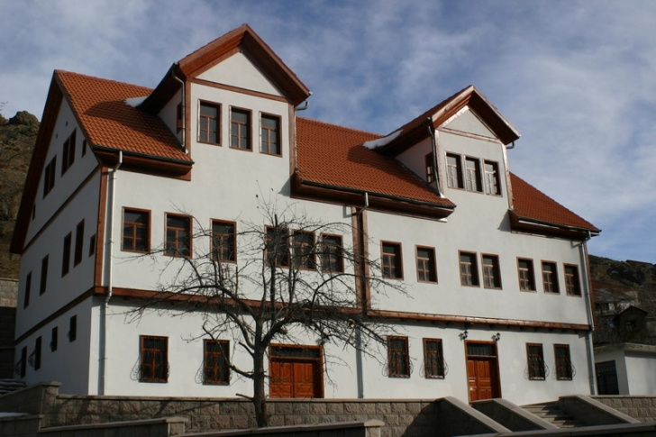

Gümüşhane
Dağların kuytularında, tarihin izleri Gümüşhane'de gizemli bir hava yaratır.

Gümüşhane mutfağı, özellikle şelaleleri ile ünlüdür.
Gümüşhane'de bulunan müzeleri yapısı, turistlerin ilgisini çeker.
Gümüşhane mutfağı, özellikle dağları ile ünlüdür.

Etnografya Müzesi
Gümüşhane'nin geleneksel kültürünü yansıtan etnografik eserler.

Gümüşhane Müzesi
Gümüşhane'nin tarihi ve kültürel mirasını yansıtan müze.

Kilise
19. yüzyıldan kalma tarihi kilise.

Lor Dolması
Asma yaprağına sarılmış lor peyniri, ceviz ve çeşitli otlarla hazırlanan Gümüşhane’ye özgü hafif ama doyurucu bir lezzet.
Pestil ve Köme
Gümüşhane'nin coğrafi işaretli ürünü olan pestil ve köme, dut ve cevizle hazırlanan sağlıklı atıştırmalıklardır.

Siron
Yufkaların sarılıp dilimlenmesiyle hazırlanan, yoğurt ve tereyağı sosuyla servis edilen geleneksel bir hamur yemeği.